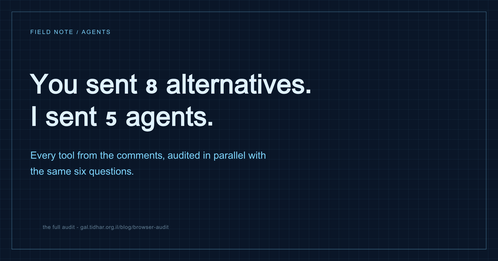

Browser automation · Agents · Research
You recommended 8 agentic browsers. I audited all of them.
The comments on the ego-lite post turned into a shopping list: Chrome DevTools MCP, Comet, Atlas, Anchor, Lightpanda, agent-browser, Firecrawl. Instead of answering from the hip, I sent five research agents in parallel, every one with the same fixed six-question sheet. One tool dies in six days. One was steered into a 1Password vault. Only three even play the game the post was about.

The method
This is repeatable for any "the comments recommended X, Y and Z" situation, and the whole thing is about five minutes of wall-clock because everything runs concurrently:
- Scrape the thread. One cheap agent opened the post, expanded every comment, returned raw text. The Hebrew OCR came back partly garbled - it did not matter, because tool names survive garbling, and names are the payload.
- Extract the entities. ~30 comments, eight distinct tools, plus the two baselines (ego lite, Claude-in-Chrome).
- Fan out with a fixed question sheet. Five research agents in parallel, one per tool family, all answering the same six questions. The fixed sheet is the entire trick: it forces comparable answers instead of five marketing summaries, and it stops each agent from grading its tool on the dimension it happens to be good at.
- Verify the load-bearing claims. A separate agent re-checked the three boldest facts against primary sources. All three held (one nuance corrected).
- Compile. The verdict falls out of the grid, not out of any single agent's opinion.
The six-question sheet
Price and speed are the questions people ask. These are the ones that separate:
- Does the agent inherit my logins? The point of "act as me" is arriving at Gmail, GitHub, a client's admin panel already signed in. A tool that starts from a clean profile is a scraper, whatever it calls itself.
- What happens at a captcha or 2FA wall? Three possible answers: the agent gets stuck (most tools), a defined handoff to a human (ego, Anchor's live view), or the vendor sells captcha bypass - which is an anti-bot arms race, not a protocol.
- Who wins when both hands are on the wheel? The under-asked one. If the human grabs control, can the agent grab it back? A runtime-enforced boundary is a different product from a polite convention.
- Can it run many isolated tasks at once? Isolation is not just politeness - it is fan-out. Ten agents, each in its own context, each with your logins.
- What does one interaction cost? One tool call per click burns a model round-trip per action. A script per round - twenty actions inside - is an order of magnitude cheaper and legible afterwards.
- What is the blast radius when it is fooled? Prompt injection is unsolved everywhere. What differs is what a hijacked agent can reach: an isolated task-space, a cloud sandbox, or your live session with your password manager one tab away.
Category one: not playing the same game
Firecrawl is a scraping and crawling API, not a browser you drive. It renders pages on its own cloud infrastructure, anonymously - no documented way to bring your cookies or sessions, no captcha story beyond paid stealth proxies, and its interact tool is for shallow single-session clicks. Excellent at public-web extraction at scale (credit-priced, $16-$599/mo tiers). Wrong tool for "act on my accounts".
Lightpanda is the most interesting wrong answer: a from-scratch browser engine written in Zig - not a Chromium fork - that skips visual rendering entirely. No layout, no paint, no screenshots. That is why it benchmarks ~9x faster and ~16x lighter than headless Chrome, and also why it segfaults on script-heavy pages, gets fingerprinted and blocked by Google, and cannot do anything that requires seeing the page. Beta, AGPL, self-hosted, has an MCP server. A scraping accelerator with real promise - not an agentic browser.
Atlas (OpenAI's browser) is being shut down on August 9, 2026 - six days from this post - with browser-agent capability folded back into ChatGPT itself (OpenAI's own notice). It also never had an external API: Claude could not drive it. Moot.
Comet (Perplexity) is the cautionary tale worth actually studying. It runs its agent inside your real session, with full user privileges, and no boundary between "instruction from the user" and "content from the page". The consequence is the worst disclosed security record in the category: hidden-text prompt injection (Brave, Aug 2025), one-click exfiltration via crafted URLs ("CometJacking", LayerX), injections hidden inside screenshots, and Zenity's "PerplexedBrowser" - steering Comet through an authenticated 1Password session and extracting vault secrets in under four minutes. Trail of Bits audited it in Feb 2026 and concluded the weakness is architectural.
Category two: the real contenders
Chrome DevTools MCP (Google, open source) - the recommendation was half right. It really does run a fully separate Chrome that never touches your daily browser, and its profile persists between runs. But it does not inherit your real logins: since Chrome 136, Google blocks debugger attachment to your default profile, so the tool keeps its own lookalike profile you log into once, per site. A clean profile with no history also looks like a bot, so it trips more captchas - and it has no handoff mechanism when it does; the agent is simply stuck. Parallelism is officially unsupported (one server, one Chrome). Where it genuinely wins: debugging, performance tracing and network inspection of your own apps - the entire DevTools surface exposed as tools. That is its actual job.
agent-browser (Vercel Labs, open source) - architecturally the closest thing to ego lite that runs everywhere. Rust CLI over CDP, drives real Chrome. It genuinely acts as you: --profile reuses your actual Chrome profile, named sessions restore cookies and storage (optionally encrypted), and an auth vault keeps credentials out of the model's sight. Token-efficient by design: accessibility-tree snapshots of ~200-400 tokens per page instead of screenshots, plus a batch mode. What it lacks is exactly ego's two headline features - no handoff protocol for captcha/2FA (a plugin hook exists; you bring the solver) and no user-override boundary at all. One design tension worth knowing: its security allowlist mode disables the profile-reuse that makes it useful.
And a live data point, from the comments of the original post while I was writing this one: Roy Weisfeld reports running agent-browser in production against Google Workspace purchase automation and fighting exactly the session-keeping gap the sheet predicted. The grid said "sessions are its strength, durability around walls is DIY"; production said the same thing louder.
Anchor Browser - the same idea, in the cloud, for money. Managed Chromium instances driven by MCP, SDK or raw CDP. Persistent browser profiles hold auth state; 2FA is handled by a genuinely good mechanism - an embeddable live view where a human takes over the running cloud session, completes the login, and automation resumes with state carried over. Captcha bypass is a paid feature. Parallelism is its strong suit (isolated cloud instances, 5 free / 200+ paid). Priced like infrastructure: $0.05 per browser-hour, $0.01 per AI step, plans $0-$2,000/mo. Right answer for production agent fleets; wrong answer for a personal Mac workflow - it charges monthly for what ego does free, with your sessions on their machines.
The grid
| Your logins | Captcha/2FA handoff | User-override boundary | Parallel contexts | Interaction cost | Price / platform | |
|---|---|---|---|---|---|---|
| ego lite | Yes - imports profile, spaces inherit sessions | Formal protocol (handOff → resume) | Hard - runtime-enforced | Yes, spaces | Batched Node scripts | Free · Mac only |
| agent-browser | Yes - real profile reuse, auth vault | DIY (plugin hook) | None | Named sessions | Batched CLI, ~300-token snapshots | Free OSS · cross-platform |
| Anchor | Yes - cloud profiles | Live-view human takeover; paid captcha bypass | Live-view takeover | Strong (cloud instances) | Tool calls or compiled NL steps | $0-2,000/mo · cloud |
| Claude-in-Chrome | Yes - it is your Chrome | Pause, human solves in-tab | Soft (tab groups) | Per-session tab groups | One tool call per action | Pro/Max plan |
| DevTools MCP | No - separate lookalike profile | None - gets stuck | N/A (separate browser) | Weak, unsupported | Tool calls, some batching | Free OSS |
| Lightpanda | No - DIY cookies | None | N/A headless | Recent, unstable | CDP scripts, very fast | Free AGPL · self-host |
| Comet | Yes - full user privileges (the problem) | None | None | Paid background assistants | No external API | Free-$200/mo |
| Firecrawl | No - anonymous cloud renders | None | N/A | Plan-gated | Credit API, 1/page | Free-$599/mo |
Only three rows answer "yes" to question 1 without failing question 6: ego lite, agent-browser, Anchor. Only one of those is free with both a handoff protocol and a hard user-wins boundary.
What I keep
- The six-question sheet is the durable asset. New agentic browser next month? Same grid, thirty seconds to a category.
- "Inherits my logins" and "hard user boundary" must come together. Comet has the first without the second and became the security case study of the category. Any tool offering session inheritance without a runtime-enforced stop deserves suspicion - including Claude's own extension.
- Batched scripting beats per-click tool calls on cost, speed and auditability. ego and agent-browser both landed on it independently; it is becoming the pattern.
- Watchlist: agent-browser (one handoff protocol away from parity, and cross-platform), Anchor's compiled-plan caching, and Lightpanda's maturity curve for pure scraping.
Sources
All claims collected 3 Aug 2026 from: ChromeDevTools/chrome-devtools-mcp, vercel-labs/agent-browser, docs.anchorbrowser.io, lightpanda-io/browser (issues #1854, #2176), Brave Security, Zenity Labs, Trail of Bits, OpenAI help center, Claude in Chrome docs, and part one of this series. The three boldest claims (Atlas shutdown, the 1Password PoC, the Chrome 136 block) were independently re-verified against those primary sources before publishing.